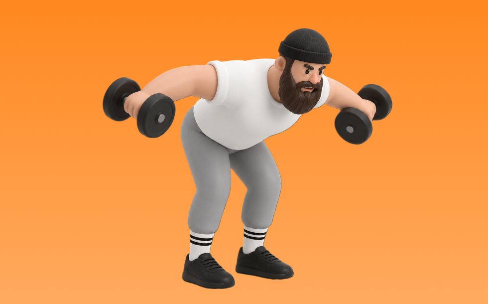

ダンベルリアデルトフライ

ダンベルリアデルトフライとは、ダンベルを使って「腕を開いて閉じる」動作で肩後部（三角筋後部）、上背部を鍛える種目です。可動域が広く、左右のバランスを整えやすいのが特徴で、反動を抑えてコントロールしながら反復します。姿勢改善や肩の安定性向上が期待できます。
- 対象部位
- 肩
- 器具
- ダンベル
- 記録形式
- 重量・回数
- 別名
- リアデルトフライ / rear delt
YouTube動画
-
【初心者】リアレイズの正しいやり方 | 肩の後ろ側に効きまくる【ビーレジェンド プロテイン】
-
【筋トレ悪いフォーム解説】リアデルトフライでよくある間違い解説！三角筋後部狙いはこう鍛える！
-
【筋トレ悪いフォーム解説】リアレイズが効いているかわからない方へ向けたコツを伝授！
-
【筋トレ】リアデルトの全てを置いてきた動画。
-
【ダンベルで行う】肩が苦手な人がやるべき種目3選をわかりやすく解説します
-
【リア】三角筋後部を鍛えるおすすめ種目BEST3！【筋トレ】
-
【胸をデカくしたい方へ】誰でもできるダンベルフライのやり方を本気で解説します
-
三角筋後部筋トレの定番『マシンリアデルトフライ(ペックデッキ)』をわかりやすく解説！
-
【ダンベルフライ】初心者が肩を怪我せず、大胸筋を鍛えるフォーム解説
-
【三角筋後部】ケーブルリアデルトフライで肩裏を鍛える！背中の迫力を出すにもおすすめの種目◎
-
【間違ったフォーム解説】ダンベルフライで胸に効かすなら、このフォームをマスターしよう！
-
三角筋後部を大きくしたいなら、実はあの種目が効果的です【筋トレ】
YouTubeショート
-
肩のリアは胸をつけて動作しろ
-
【30秒でわかる】リアレイズ解説
-
99%が間違えるリアデルトフライのやり方 #筋トレ #肩トレ #筋トレ初心者 #fitness #ジム #バズれ #shorts
-
【肩トレ解説】リアデルトイド #筋トレ解説 #肩トレ #肩トレーニング
-
【ダンベルフライ正しいやり方】理想と間違い #筋トレ #ボディメイク #ボディビル #プロテイン #tryve #ボディメイク
-
ダンベルで丸い肩を！リアレイズ~意識ポイント~
-
みなさんはリアレイズどのようにされてますか？？今回は持田選手がリアレイズを伝授！次はどの種目の解説をやってほしいかコメントしてね！ #トレーニング #筋トレ #volix #ちょこっと惜しい
-
【30秒でわかる】ダンベルフライ解説📝
-
正しいダンベルロウ4つのポイント #筋トレ
-
【ライイングリアレイズ解説】#shorts
-
【ダンベル】背中トレ4選 #筋トレ
-
個人的に最も効果のある三角筋の種目3選を紹介 #筋トレ #フィットネス
-
正しいサイドレイズ4つのポイント #筋トレ
-
絶対にリアに入るリアレイズのやり方#筋トレ初心者 #肩トレ#ジム
-
【ダンベル】肩トレ3選 #筋トレ
-
リアレイズの基本動作 #shorts #持田式 #筋トレ
-
【ダンベル】胸全部鍛えるトレーニング４選 #筋トレ
-
ペックフライのフォームについてです✨
-
めっちゃ肩がデカくなった今やってるメニュー！#shorts
-
正しいダンベルベンチプレス5つのポイント 【筋トレ】
-
胸トレ1種目しかできないならどっち？ #山本義徳 #shorts
-
【筋トレ】大胸筋が急成長！ペックフライの正しいやり方
-
肩トレのやり方🔥〜インクラインサイドレイズ基礎編〜 #筋トレ #筋肉 #筋肉社長 #マッチョ #肩トレ
-
リアレイズの正解フォーム、教えます！ #リアレイズ #肩トレ #三角筋後部 #筋トレ初心者 #筋トレフォーム #AI筋トレ研究所 #Shorts
-
【胸トレ解説】インクライン・ダンベルフライ #筋トレ解説 #胸トレ #胸筋トレ
-
【筋トレ初心者必見 ! |ダンベルフライのやり方】日本人初ミスター・オリンピアに出場した、山岸プロが解説！ #山岸秀匡 #筋トレ初心者 #ダンベルフライ 横verはコメ欄から!
-
みなさんはリアレイズやってますか？持田選手（おかずもち）がしっかり三角筋後部に効くトレーニングをレクチャーしてくれました！#筋トレ #volix #肩トレ #ちょこっと惜しい #三角筋
-
こんなダンベルフライはやめろ！正しいフォーム解説 #筋トレ
-
肩のリアを鍛える時の椅子の高さ
-
ダンベルフライのフォーム#shorts
-
このダンベルフライはやめろ！#shorts
-
胸が成長しないダンベルプレス #筋トレ
-
【ダンベルフライ】初心者さんが肩を痛める理由はこれだ！ #筋トレ #フォーム解説
-
【筋トレ】ペックフライのやり方＃筋トレ＃筋肉＃ペックフライ＃胸トレ#chesttraining g
-
【肩】リアデルトフライ #shorts #持田教利 #肩トレ
-
【こんなダンベルフライは辞めろ】肩を痛めない正しいフォーム
-
持田選手の教える怪我をしないためのリアレイズがこちら！！#トレーニング #筋トレ #volix #fitness #workout #肩トレ #リアレイズ
動作方法
- 体幹を安定させ、背中が丸まらない姿勢を作る
- 肘を後方へ引き、肩甲骨を寄せる
- 勢いを使わず、ゆっくり戻す
動作ポイント
- 背中を丸めない
- 首に力を入れすぎない
- 戻しを速くしすぎない
ワンポイントアドバイス
- 重量よりも肩の軌道を安定させる
- 首まわりの力みを減らして行う
目的別回数設定
目的や体力に応じた一般的な目安です。無理のない範囲で調整してください。
- 筋力アップ
- 1〜5回
- 筋肥大
- 6〜12回
- 持久力アップ
- 13〜20回
YouTube動画について
動画はYouTubeの公開情報をもとに表示しています。内容は投稿者によるもので、Biggrによる監修ではありません。
アプリを入手
筋トレやトレーニングの記録はBiggrにお任せください。今すぐ無料で使い始められます。